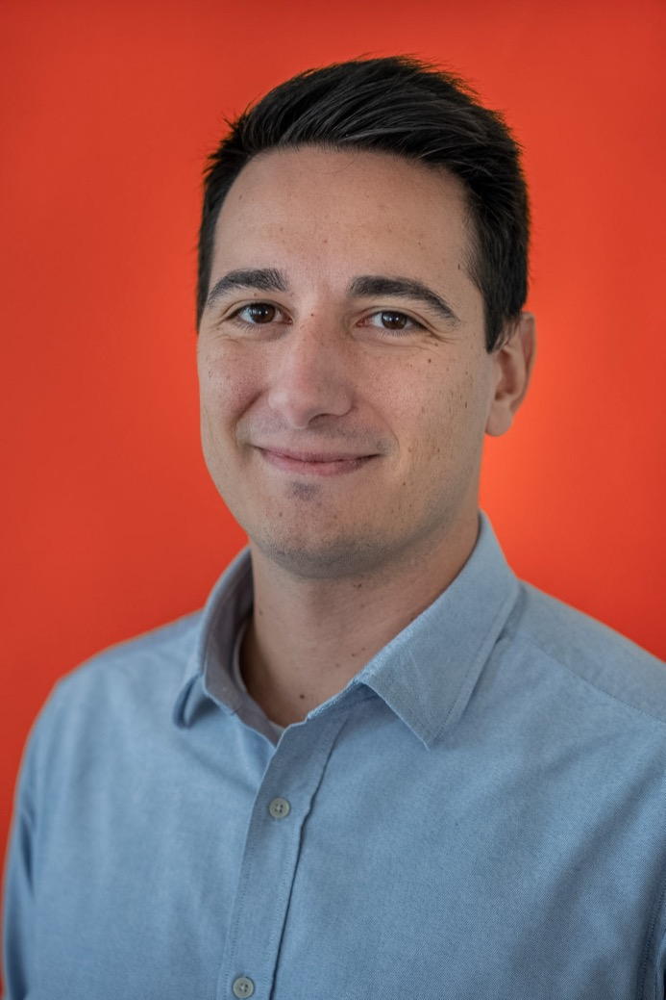

Software technical leadership rooted in C++, AUTOSAR and Automotive SPICE. I align teams, set engineering standards, and steer complex projects from architecture all the way to delivery.

A software technical leader who turns complex, demanding projects into shipped, well-engineered code — and brings the team along for the ride.
A BCU Software Product Owner and former Autonomous Vehicles Development Engineer. I lead cross-functional C++ teams across embedded, CI/CD and quality domains — setting engineering standards and steering ASPICE-compliant delivery end to end, hands-on where it counts. Innovative, progressive thinking is the part I enjoy most, backed by strong organization and communication.
An experienced C++, Python, MATLAB & Simulink and ROS developer, with applications directed to motion planning and control. Native Greek, fluent English, based in Regensburg, Germany.
Quintic-polynomial lane change — a jerk-minimal, collision-free trajectory steering the ego vehicle around a stopped obstacle on a curving two-way road. The other half of my world.
SW Technical & Quote Lead for new customer programs — scope clarification, feature sizing, R&D estimation and Software Bill of Materials. Lead cross-functional teams across embedded, CI/CD and quality for Body Control Unit programs, owning end-to-end release cycles and ASPICE-compliant processes for Tier-1 OEM customers.
Technical control, coordination and tracking of an agile SW team. Responsible for the planning, implementation and verification of complex functions and components, and technical management of assigned engineers across several locations.
Technical lead for the C++ development, testing, integration and review process, focused on ADAS. Development engineer in a funding project for an ADAS-focused sensor-evaluation methodology and test-bench facility in Roding — and expert functional/software developer of motion planning in C++.
Functional & software development of motion planning and control in C++ and Simulink across three customer projects — waypoint-based navigation, target following and point-to-point navigation — plus two internal R&D projects. Hands-on vehicle integration and testing with ROS.
Specialisation in Autonomous Vehicle Dynamics & Control. Thesis conducted at Airbus SE (UK): autonomous indoor inspection of aircraft wing panels with a UV-equipped UAV — onboard computer vision for defect recognition and RTLS-based indoor localisation.
Thesis on autonomous navigation of unmanned aerial vehicles — SLAM-based indoor localisation using an onboard monocular camera, with drone stabilisation through motion-control libraries.
AI skill prompts that give coding agents real embedded-automotive expertise — AUTOSAR, MISRA, ISO 26262 and ECU development.
GitHub →A collection of path-planning algorithms implemented and explored in MATLAB.
Repository →Autonomous indoor inspection of an aircraft wing panel with a UV-equipped UAV — computer vision defect recognition and RTLS indoor localisation.
Read PDF →Indoor localisation of a UAV with SLAM applied to an onboard monocular camera, stabilised through motion-control libraries.
Read PDF →Survey paper analysing the most important simultaneous localisation & mapping methods, focused on monocular-camera applications.
Read PDF →Street, architecture and cars — shot around Regensburg and beyond, pulled live from my Unsplash.